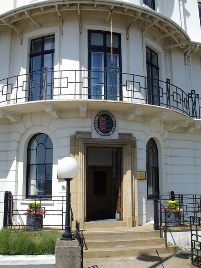
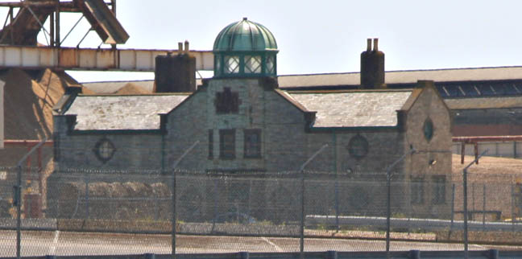
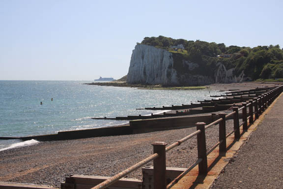
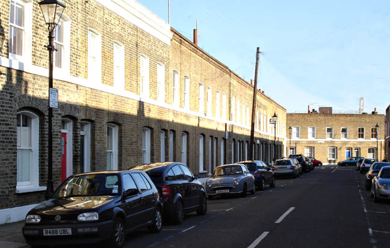
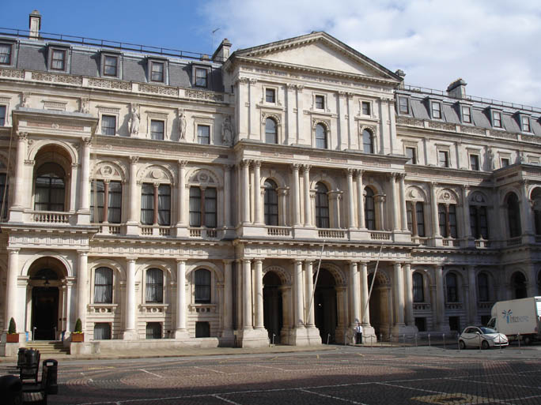
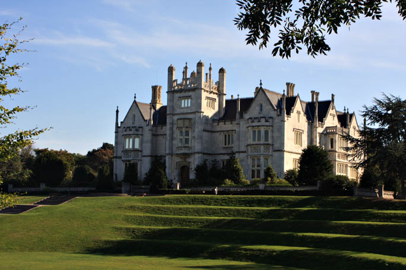

Dover Harbour Board offices - as the 'Sea View Hotel'.

Part of Dover old port and docks seen in the episode. The surrounding buildings seen on the screen have now been demolished.

St. Margaret's Bay, Kent as seen in the episode.

Quilter Street, London E1. Hastings chases some boys away from his car after leaving Fingler's Tailors with Poirot.

The Foreign Office, London.

Ingress Abbey, Greenhithe, Kent - as 'Sommerscot Hall'.